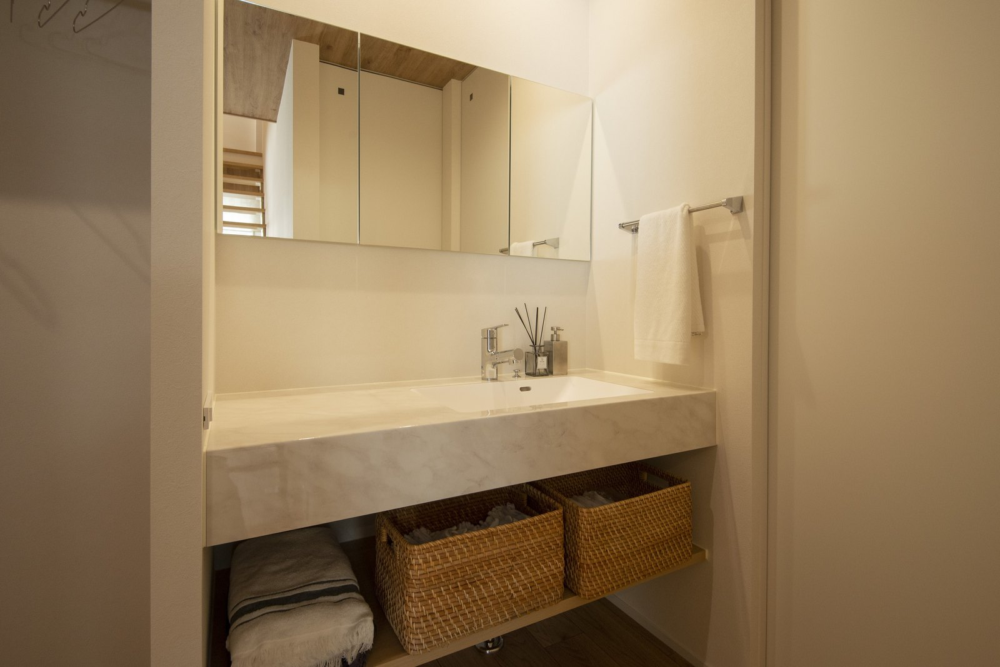
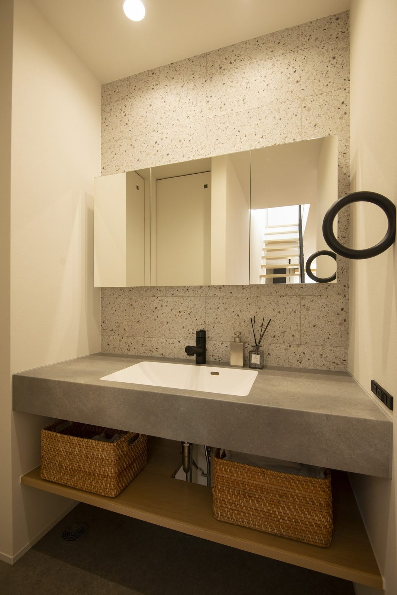

奈良で新築の間取りを考えるなら、冬の朝に家族がどこで身支度をするかを思い出してみてください。誰かが入浴している間にも洗面を使いたいのか、脱衣室に着替えを置きたいのかで、使いやすい配置は変わります。

洗面を使う時間と入浴時間を書き出す
家族が洗面を使う時間を、平日の朝と夜に分けて書き出します。入浴と歯磨きが重なるなら、洗面を廊下側に置く案や、洗面と脱衣を建具で分ける案を比べてみてください。来客が洗面を使うとき、洗濯物や着替えがどこまで見えるかも確認します。

着替えと洗濯物を運ぶ順番を見る
脱衣室にタオルと下着を置くなら、誰が補充するかまで考えると収納量が決まります。洗濯機を同じ部屋に置く場合は、かごを床に置いた状態で扉が開くか、洗濯物を持って通れるかを図面で確認してください。
寒さは、空間全体の計画として相談する
脱衣室を暖かく使いたいなら、窓、換気、暖房の計画を一緒に相談します。建具で仕切ると空気の流れも変わるため、扉を閉めた状態でどこから暖かさが届くのかを聞いてください。現在の住まいで寒さを感じる場所と時間を伝えると、設計担当が条件を整理しやすくなります。
関連記事 寒さを抑える住まいの確認点
よくある質問
洗面と脱衣室は必ず分けるべきですか？
使う時間が重なるか、来客時にどこまで見せたいかで判断します。同じ空間にまとめる場合も、収納や扉の位置を比べてください。

この記事を書いた人：やすろー
株式会社シバ・サンホーム 専務／資金計画・土地探しの窓口
奈良の工務店シバサンホームで、
土地さがし・資金計画・打合せの窓口をしています。
モットーはスピード・誠実さ・楽しさ。